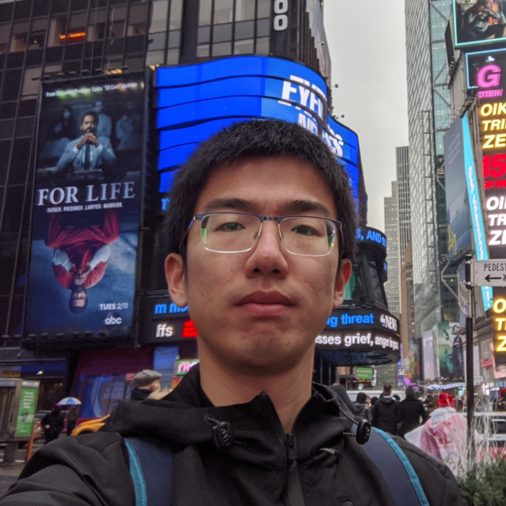

My research is about auditing data collection practices of applications across various ecosystems (e.g., web, mobile and VR),
with a focus on analyzing privacy policies at scale using natural language processing (NLP) techniques.

Education
University of California, Irvine2020 - Today
Ph.D. in Networked Systems
University of Science and Technology of China2017 - 2020
M.Eng. in Electronics and Communication Engineering
University of Science and Technology of China2013 - 2017
B.Sci. in Geophysics
B.Eng. in Computer Science and Technology
Publications
I. Jarin, Yu Duan, R. Trimananda, H. Cui, S. Elmalaki, A. Markopoulou
"BehaVR: User Identification Based on VR Sensor Data,"
under submission, 2024.
U. Iqbal, P. N. Bahrami, R. Trimananda, H. Cui, A. Gamero-Garrido, D. Dubois, D. Choffnes, A. Markopoulou, F. Roesner, Z. Shafiq,
"Tracking, Profiling, and Ad Targeting in the Alexa Echo Smart Speaker Ecosystem,"
in ACM Internet Measurement Conference 2023, Oct. 2023.
Best Paper Award
H. Cui, R. Trimananda, A. Markopoulou, S. Jordan,
"PoliGraph: Automated Privacy Policy Analysis using Knowledge Graphs,"
in Proc. of USENIX Security Symposium 2023, Aug. 2023.
Paper & Presentation |
Extended paper |
Code
R. Trimananda, H. Le, H. Cui, J. T. Ho, A. Shuba and A. Markopoulou,
"OVRseen: Auditing Network Traffic and Privacy Policies in Oculus VR,"
in Proc. of USENIX Security Symposium 2022, Aug. 2022.
Website |
Paper & Presentation |
Extended paper
H. Bian, H. Cui, K. Liu, Z. Hang, D. Chen, W. Zhou, W. Zhang, and N. Yu,
"CDAE: Color Decomposition-based Adversarial Examples for Screen Devices,"
in Information Sciences, Vol. 569, Aug. 2021.
J. Zhang, D. Chen, J. Liao, H. Fang, W. Zhang, W. Zhou, H. Cui, and N. Yu,
"Model Watermarking for Image Processing Networks,"
in Proc. of the AAAI Conference on Artificial Intelligence, Vol. 34(7), Feb. 2020.
H. Fang, W. Zhang, Z. Ma, H. Zhou, S. Sun, H. Cui, and N. Yu,
"A Camera Shooting Resilient Watermarking Scheme for Underpainting Documents,"
in IEEE Transactions on Circuits and Systems for Video Technology, Vol. 30(11), Nov. 2020.
H. Fang, W. Zhang, H. Zhou, H. Cui, and N. Yu,
"Screen-Shooting Resilient Watermarking,"
in IEEE Transactions on Information Forensics and Security, Vol. 14(6), Jun. 2019.
H. Cui, H. Bian, W. Zhang, and N. Yu,
"UnseenCode: Invisible On-screen Barcode with Image-based Extraction,"
in Proc. of IEEE INFOCOM 2019, Apr. 2019.
Paper |
Demo abstract |
Code:
Android,
Desktop
H. Cui, and X. Zha,
"Parallel Image Registration Implementations for GMTSAR Package,"
in Seismological Research Letters, Vol. 89(3), Feb. 2018.
Paper |
Code